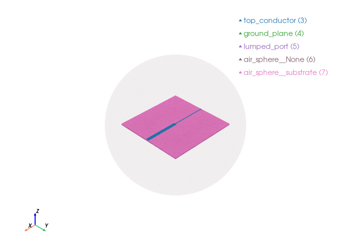

Step in depth antenna#
A step in width microstrip antenna is a design variation where the radiating patch element has a non-uniform width that changes along its length. Instead of a simple rectangular patch, the conducting strip gradually narrows or widens at specific points.
import gmsh
import math
import os
from pathlib import Path
from palacetoolkit.viz import view_mesh
from palacetoolkit.mesh import (
Entity,
run_entity_pipeline,
generate_3d_mesh,
create_graded_mesh,
)
from palacetoolkit.simulation import Simulation, run_palace
Parameters:#
l1 : Ground plane length along x-axis, specified as a scalar in meters
w1 : Ground plane width along y-axis, specified as a scalar in meters
h : Patch height along z-axis, specified as a scalar in meters.
strip_line_length : Notch length along x-axis, specified as a scalar in meters.
strip_lined_width_near_port: Notch width along x-axis near the port, specified as a scalar in meters.
strip_lined_width_far: Strip line width along y-axis far from the port, specified as a scalar in meters.
air_height : Air box height along z-axis, specified as a scalar in meters.
air_margin : Air box margin along x and y axes, specified as a scalar in meters.
freq : Simulation frequency in GHz, specified as a scalar.
filename : Output mesh filename, specified as a string.
l1: float = 0.06
w1: float = 0.06
strip_line_length: float = 0.06
strip_line_width_near_port: float = 0.001
strip_line_width_far: float = 0.003
h: float = 0.0013
air_height: float = 0.025
air_margin: float = 0.025
freq: float = 3.3
filename: str = "sw_antenna.msh"
wavelength = 3e8 / (freq * 1e9)
Initialize the model#
gmsh.initialize()
gmsh.model.add("patch_antenna")
kernel = gmsh.model.occ
Geometry generation#
# Total domain bounds
total_xmin = -l1/2 - air_margin
total_xmax = l1/2 + air_margin
total_ymin = -w1/2 - air_margin
total_ymax = w1/2 + air_margin
total_zmax = h + air_height
substrate = kernel.addBox(-l1/2, -w1/2, 0, l1, w1, h)
ground_plane = kernel.addRectangle(-l1/2, -w1/2, 0, l1, w1)
strip_line_1 = kernel.addRectangle(-l1/2, -strip_line_width_near_port/2, h, strip_line_length/2, strip_line_width_near_port)
strip_line_2 = kernel.addRectangle(0, -strip_line_width_far/2, h, strip_line_length/2, strip_line_width_far)
top_conductor, _ = kernel.fuse(
[(2, strip_line_1)], [(2, strip_line_2)],
removeObject=True, removeTool=True
)
kernel.synchronize()
gap = 0
lumped_port = kernel.addRectangle(-l1/2 + gap, -strip_line_width_near_port/2, 0, h - gap, strip_line_width_near_port)
kernel.rotate([(2, lumped_port)], -l1/2, 0, 0, 0, 1, 0, -math.pi/2)
kernel.synchronize()
# Replace box with an enclosing air sphere, following the patch_antenna pattern.
airsphere_radius = max(abs(total_xmin), abs(total_xmax), abs(total_ymin), abs(total_ymax), total_zmax)
air_sphere = kernel.addSphere(0.0, 0.0, 0.0, airsphere_radius)
kernel.synchronize()
Info : [ 0%] Union
Info : [ 10%] Union
Info : [ 20%] Union
Info : [ 30%] Union
Info : [ 40%] Union
Info : [ 50%] Union
Info : [ 70%] Union
Info : [ 80%] Union - Splitting faces
Info : Cannot bind existing OpenCASCADE surface 8 to second tag 9
Info : Could not preserve tag of 2D object 9 (->8)
Entities definition#
# Material and port constants reused in meshing/config sections.
eps_r: float = 2.2
loss_tan: float = 0.0009
port_impedance: float = 50.0
entities = [
Entity("air_sphere", dim=3, btype="dielectric", mesh_order=2, tags=[air_sphere], eps_r=1.0, mu_r=1.0, loss_tan=0.0),
Entity("substrate", dim=3, btype="dielectric", mesh_order=1, tags=[substrate], eps_r=eps_r, mu_r=1.0, loss_tan=loss_tan),
Entity("top_conductor", dim=2, btype="pec", mesh_order=1, tags=[top_conductor[0][1]]),
Entity("ground_plane", dim=2, btype="pec", mesh_order=1, tags=[ground_plane]),
Entity("lumped_port", dim=2, btype="lumped_port", mesh_order=0, tags=[lumped_port], R=port_impedance, direction="+Z", excitation=True),
]
pg_map = run_entity_pipeline(entities)
# Refine near the top conductor and locally the lumped port
create_graded_mesh( wavelength,
ppw_near=50,
ppw_far=30,
set_as_background=True)
print(entities)
# Mesh sizes
mesh_sizes = {
"substrate": wavelength / 12,
"air_sphere": wavelength / 4,
"lumped_port": wavelength / 150,
"ground_plane": wavelength / 10,
"top_conductor": wavelength / 50,
}
generate_3d_mesh(entities, mesh_sizes, filename, optimize=True, verbose=False)
view_mesh(filename, transparent_groups="air_sphere__None")
Physical group 'air_sphere' (dim=3): pg=1, tags=[2]
Physical group 'substrate' (dim=3): pg=2, tags=[1]
Physical group 'top_conductor' (dim=2): pg=3, tags=[8]
Physical group 'ground_plane' (dim=2): pg=4, tags=[7]
Physical group 'lumped_port' (dim=2): pg=5, tags=[9]
Physical group 'air_sphere__None' (dim=2): pg=6, tags=[17]
Physical group 'air_sphere__substrate' (dim=2): pg=7, tags=[10, 11, 13, 15, 16, 14, 12]
ignoring 3 curves from {'air_sphere__None'}
global: 26 curves, SizeMin=0.0018
ppw_near=50 ppw_far=30
SizeMax=0.0030 transition=0.0227
[Entity('air_sphere', dim=3, order=2, tags=[2]), Entity('substrate', dim=3, order=1, tags=[1]), Entity('top_conductor', dim=2, order=1, tags=[8]), Entity('ground_plane', dim=2, order=1, tags=[7]), Entity('lumped_port', dim=2, order=0, tags=[9])]
Loading mesh file: sw_antenna.msh
Groups to render transparent: air_sphere__None
Mesh loaded successfully with 2 cell blocks
Found 15988 triangles total
Physical group tags in mesh: {3: 'top_conductor', 4: 'ground_plane', 5: 'lumped_port', 6: 'air_sphere__None', 7: 'air_sphere__substrate'}

Generate JSON config#
output_file: str = "sw_antenna.json"
freq_min: float = 3.0
freq_max: float = 3.5
freq_step: float = 0.005
solver_order: int = 2
def attr(name):
return [pg_map[name]] if name in pg_map else []
sim = Simulation(output_dir=os.getcwd(), apply_mesh_options=False)
sim.config = {
"Problem": {
"Type": "Driven",
"Verbose": 2,
"Output": "postpro/sw_antenna"
},
"Model": {
"Mesh": filename,
"L0": 1.0,
"Refinement": {}
},
"Domains": {
"Materials": [
{
"Attributes": attr("substrate"),
"Permittivity": eps_r,
"Permeability": 1.0,
"LossTan": loss_tan
},
{
"Attributes": attr("air_sphere"),
"Permittivity": 1.0,
"Permeability": 1.0
}
]
},
"Boundaries": {
"PEC": {
"Attributes": attr("ground_plane") + attr("top_conductor")
},
"LumpedPort": [
{
"Index": 1,
"Attributes": attr("lumped_port"),
"R": port_impedance,
"Excitation": True,
"Direction": "+Z"
}
],
"Absorbing": {
"Attributes": attr("air_sphere__None"),
"Order": 1
}
},
"Solver": {
"Order": solver_order,
"Device": "CPU",
"Driven": {
"MinFreq": freq_min,
"MaxFreq": freq_max,
"FreqStep": freq_step,
"AdaptiveTol": 0.001
},
"Linear": {
"Type": "Default",
"KSPType": "GMRES",
"Tol": 1.0e-8,
"MaxIts": 200,
"ComplexCoarseSolve": True
}
}
}
config_path = str(sim.write_config(output_file))
run_palace(config_path, num_procs=8, work_dir=os.getcwd())
Palace config written to /tmp/palacetoolkit-docs.dabfYK/docs/examples/sw_antenna.json
Running: /home/martin/.cache/palacetoolkit/runtime/palace-cpu-v0.17.0/bin/palace --serial /tmp/palacetoolkit-docs.dabfYK/docs/examples/sw_antenna.json
>> /home/martin/.cache/palacetoolkit/runtime/palace-cpu-v0.17.0/bin/palace-x86_64.bin /tmp/palacetoolkit-docs.dabfYK/docs/examples/sw_antenna.json
_____________ _______
_____ __ \____ __ /____ ____________
____ /_/ / __ ` / / __ ` / ___/ _ \
___ _____/ /_/ / / /_/ / /__/ ___/
/__/ \___,__/__/\___,__/\_____\_____/
--> Warning!
Output folder is not empty; program will overwrite content! (postpro/sw_antenna)
Git changeset ID: v0.17.0-194-g01f5d9bd1
Running with 1 MPI process, 1 OpenMP thread
Device configuration: omp,cpu
Memory configuration: host-std
libCEED backend: /cpu/self/xsmm/blocked
Added 174 elements in 2 iterations of local bisection for under-resolved interior boundaries
Added 1035 duplicate vertices for interior boundaries in the mesh
Added 2273 duplicate boundary elements for interior boundaries in the mesh
Characteristic length and time scales:
Lc = 1.100e-01 m, tc = 3.669e-01 ns
Finished partitioning mesh into 1 subdomain
Mesh curvature order: 1
Mesh bounding box:
(Xmin, Ymin, Zmin) = (-5.500e-02, -5.500e-02, -5.500e-02) m
(Xmax, Ymax, Zmax) = (+5.500e-02, +5.498e-02, +5.500e-02) m
Parallel Mesh Stats:
minimum average maximum total
vertices 29413 29413 29413 29413
edges 188751 188751 188751 188751
faces 310683 310683 310683 310683
elements 151342 151342 151342 151342
neighbors 0 0 0
minimum maximum
h 0.00679076 0.0488643
kappa 1.04087 8.22709
Estimated current per-rank memory usage is: Min. 180.5M, Max. 180.5M, Avg. 180.5M, Total 180.5M
Estimated current per-node memory usage is: Min. 180.5M, Max. 180.5M, Avg. 180.5M, Total 180.5M
Configuring Robin absorbing BC (order 1) at attributes:
6
Configuring Robin impedance BC for lumped ports at attributes:
5: Rs = 3.846e+01 Ω/sq, n = (-1.0,+0.0,+0.0)
Configuring lumped port circuit properties:
Index = 1: R = 5.000e+01 Ω
Configuring lumped port excitation source term at attributes:
5: Index = 1
Configuring Dirichlet PEC BC at attributes:
3-4
Computing adaptive fast frequency response for:
Excitation with index 1 has contributions from:
Lumped port 1
Beginning PROM construction offline phase:
101 points for frequency sweep over [3.000e+00, 3.500e+00] GHz
Assembling system matrices, number of global unknowns:
H1 (p = 2): 218164, ND (p = 2): 998868, RT (p = 2): 1386075
Operator assembly level: Partial
Mesh geometries:
Tetrahedron: P = 20, Q = 14 (quadrature order = 4)
Assembling multigrid hierarchy:
Level 0 (p = 1): 188751 unknowns
Level 1 (p = 2): 998868 unknowns
Level 0 (auxiliary) (p = 1): 29413 unknowns
Level 1 (auxiliary) (p = 2): 218164 unknowns
Residual norms for GMRES solve
0 (restart 0) KSP residual norm 3.514552e+01
1 (restart 0) KSP residual norm 8.788764e+00
2 (restart 0) KSP residual norm 1.139096e+00
3 (restart 0) KSP residual norm 1.256635e-01
4 (restart 0) KSP residual norm 4.426160e-02
5 (restart 0) KSP residual norm 5.459451e-03
6 (restart 0) KSP residual norm 1.118184e-03
7 (restart 0) KSP residual norm 2.642290e-04
8 (restart 0) KSP residual norm 6.413333e-05
9 (restart 0) KSP residual norm 1.929895e-05
10 (restart 0) KSP residual norm 4.337882e-06
11 (restart 0) KSP residual norm 1.728813e-06
12 (restart 0) KSP residual norm 4.846822e-07
13 (restart 0) KSP residual norm 1.817288e-07
GMRES solver converged in 13 iterations (avg. reduction factor: 2.305e-01)
Field energy E (4.271e-10 J) + H (4.742e-10 J) = 9.013e-10 J
Residual norms for GMRES solve
0 (restart 0) KSP residual norm 3.064074e+01
1 (restart 0) KSP residual norm 5.535340e+00
2 (restart 0) KSP residual norm 7.712672e-01
3 (restart 0) KSP residual norm 8.979728e-02
4 (restart 0) KSP residual norm 4.509668e-02
5 (restart 0) KSP residual norm 4.287758e-03
6 (restart 0) KSP residual norm 9.385858e-04
7 (restart 0) KSP residual norm 2.094726e-04
8 (restart 0) KSP residual norm 5.944092e-05
9 (restart 0) KSP residual norm 1.650745e-05
10 (restart 0) KSP residual norm 4.733055e-06
11 (restart 0) KSP residual norm 1.420571e-06
12 (restart 0) KSP residual norm 4.198405e-07
13 (restart 0) KSP residual norm 1.497239e-07
GMRES solver converged in 13 iterations (avg. reduction factor: 2.295e-01)
Field energy E (1.940e-10 J) + H (2.033e-10 J) = 3.973e-10 J
Residual norms for GMRES solve
0 (restart 0) KSP residual norm 3.080123e+01
1 (restart 0) KSP residual norm 6.890632e+00
2 (restart 0) KSP residual norm 9.361836e-01
3 (restart 0) KSP residual norm 1.049371e-01
4 (restart 0) KSP residual norm 4.223593e-02
5 (restart 0) KSP residual norm 4.581900e-03
6 (restart 0) KSP residual norm 1.005766e-03
7 (restart 0) KSP residual norm 2.269939e-04
8 (restart 0) KSP residual norm 5.905762e-05
9 (restart 0) KSP residual norm 1.769588e-05
10 (restart 0) KSP residual norm 4.212962e-06
11 (restart 0) KSP residual norm 1.612373e-06
12 (restart 0) KSP residual norm 4.146249e-07
13 (restart 0) KSP residual norm 1.747044e-07
GMRES solver converged in 13 iterations (avg. reduction factor: 2.321e-01)
Greedy iteration 1 (n = 4): ω* = 3.223e+00 GHz (7.431e+00), error = 9.172e-02, memory = 0/2
Field energy E (2.576e-10 J) + H (2.988e-10 J) = 5.564e-10 J
Residual norms for GMRES solve
0 (restart 0) KSP residual norm 3.001351e+01
1 (restart 0) KSP residual norm 5.920182e+00
2 (restart 0) KSP residual norm 8.232387e-01
3 (restart 0) KSP residual norm 9.383373e-02
4 (restart 0) KSP residual norm 4.253228e-02
5 (restart 0) KSP residual norm 4.275417e-03
6 (restart 0) KSP residual norm 9.341871e-04
7 (restart 0) KSP residual norm 2.099241e-04
8 (restart 0) KSP residual norm 5.796787e-05
9 (restart 0) KSP residual norm 1.667104e-05
10 (restart 0) KSP residual norm 4.372458e-06
11 (restart 0) KSP residual norm 1.487008e-06
12 (restart 0) KSP residual norm 3.945079e-07
13 (restart 0) KSP residual norm 1.592314e-07
GMRES solver converged in 13 iterations (avg. reduction factor: 2.309e-01)
Greedy iteration 2 (n = 6): ω* = 3.382e+00 GHz (7.797e+00), error = 8.679e-04, memory = 1/2
Field energy E (2.056e-10 J) + H (2.285e-10 J) = 4.341e-10 J
Residual norms for GMRES solve
0 (restart 0) KSP residual norm 3.325084e+01
1 (restart 0) KSP residual norm 8.126269e+00
2 (restart 0) KSP residual norm 1.072483e+00
3 (restart 0) KSP residual norm 1.187339e-01
4 (restart 0) KSP residual norm 4.373199e-02
5 (restart 0) KSP residual norm 5.132383e-03
6 (restart 0) KSP residual norm 1.089752e-03
7 (restart 0) KSP residual norm 2.524055e-04
8 (restart 0) KSP residual norm 6.242958e-05
9 (restart 0) KSP residual norm 1.888679e-05
10 (restart 0) KSP residual norm 4.302831e-06
11 (restart 0) KSP residual norm 1.710276e-06
12 (restart 0) KSP residual norm 4.625194e-07
13 (restart 0) KSP residual norm 1.819549e-07
GMRES solver converged in 13 iterations (avg. reduction factor: 2.315e-01)
Greedy iteration 3 (n = 8): ω* = 3.078e+00 GHz (7.096e+00), error = 2.178e-04, memory = 2/2
Field energy E (3.563e-10 J) + H (4.072e-10 J) = 7.635e-10 J
Adaptive sampling converged with 5 frequency samples:
n = 10, error = 2.178e-04, tol = 1.000e-03, memory = 2/2
Sampled frequencies (GHz): 3.000e+00, 3.500e+00, 3.223e+00, 3.382e+00,
3.078e+00
Sample errors: inf, inf, 9.172e-02, 8.679e-04, 2.178e-04
Total offline phase elapsed time: 1.18e+03 s
Beginning fast frequency sweep online phase
It 1/101: ω/2π = 3.000e+00 GHz (total elapsed time = 1.18e+03 s)
Sol. ||E|| = 4.709084e+01
Field energy E (4.271e-10 J) + H (4.742e-10 J) = 9.013e-10 J
S[1][1] = -4.250e-01+8.885e-01i, |S[1][1]| = -1.319e-01, arg(S[1][1]) = +1.156e+02
It 2/101: ω/2π = 3.005e+00 GHz (total elapsed time = 1.18e+03 s)
Sol. ||E|| = 4.680512e+01
Field energy E (4.224e-10 J) + H (4.701e-10 J) = 8.926e-10 J
S[1][1] = -3.995e-01+9.003e-01i, |S[1][1]| = -1.311e-01, arg(S[1][1]) = +1.139e+02
It 3/101: ω/2π = 3.010e+00 GHz (total elapsed time = 1.18e+03 s)
Sol. ||E|| = 4.651782e+01
Field energy E (4.178e-10 J) + H (4.660e-10 J) = 8.838e-10 J
S[1][1] = -3.740e-01+9.114e-01i, |S[1][1]| = -1.303e-01, arg(S[1][1]) = +1.123e+02
It 4/101: ω/2π = 3.015e+00 GHz (total elapsed time = 1.18e+03 s)
Sol. ||E|| = 4.622921e+01
Field energy E (4.131e-10 J) + H (4.618e-10 J) = 8.749e-10 J
S[1][1] = -3.484e-01+9.216e-01i, |S[1][1]| = -1.295e-01, arg(S[1][1]) = +1.107e+02
It 5/101: ω/2π = 3.020e+00 GHz (total elapsed time = 1.18e+03 s)
Sol. ||E|| = 4.593961e+01
Field energy E (4.085e-10 J) + H (4.575e-10 J) = 8.660e-10 J
S[1][1] = -3.228e-01+9.309e-01i, |S[1][1]| = -1.287e-01, arg(S[1][1]) = +1.091e+02
It 6/101: ω/2π = 3.025e+00 GHz (total elapsed time = 1.18e+03 s)
Sol. ||E|| = 4.564928e+01
Field energy E (4.038e-10 J) + H (4.533e-10 J) = 8.571e-10 J
S[1][1] = -2.972e-01+9.395e-01i, |S[1][1]| = -1.278e-01, arg(S[1][1]) = +1.076e+02
It 7/101: ω/2π = 3.030e+00 GHz (total elapsed time = 1.18e+03 s)
Sol. ||E|| = 4.535852e+01
Field energy E (3.992e-10 J) + H (4.490e-10 J) = 8.482e-10 J
S[1][1] = -2.716e-01+9.473e-01i, |S[1][1]| = -1.270e-01, arg(S[1][1]) = +1.060e+02
It 8/101: ω/2π = 3.035e+00 GHz (total elapsed time = 1.18e+03 s)
Sol. ||E|| = 4.506757e+01
Field energy E (3.946e-10 J) + H (4.446e-10 J) = 8.392e-10 J
S[1][1] = -2.461e-01+9.544e-01i, |S[1][1]| = -1.262e-01, arg(S[1][1]) = +1.045e+02
It 9/101: ω/2π = 3.040e+00 GHz (total elapsed time = 1.18e+03 s)
Sol. ||E|| = 4.477669e+01
Field energy E (3.900e-10 J) + H (4.403e-10 J) = 8.303e-10 J
S[1][1] = -2.207e-01+9.606e-01i, |S[1][1]| = -1.253e-01, arg(S[1][1]) = +1.029e+02
It 10/101: ω/2π = 3.045e+00 GHz (total elapsed time = 1.18e+03 s)
Sol. ||E|| = 4.448614e+01
Field energy E (3.854e-10 J) + H (4.359e-10 J) = 8.214e-10 J
S[1][1] = -1.955e-01+9.662e-01i, |S[1][1]| = -1.245e-01, arg(S[1][1]) = +1.014e+02
It 11/101: ω/2π = 3.050e+00 GHz (total elapsed time = 1.18e+03 s)
Sol. ||E|| = 4.419614e+01
Field energy E (3.809e-10 J) + H (4.316e-10 J) = 8.125e-10 J
S[1][1] = -1.703e-01+9.710e-01i, |S[1][1]| = -1.236e-01, arg(S[1][1]) = +9.995e+01
It 12/101: ω/2π = 3.055e+00 GHz (total elapsed time = 1.18e+03 s)
Sol. ||E|| = 4.390691e+01
Field energy E (3.764e-10 J) + H (4.272e-10 J) = 8.036e-10 J
S[1][1] = -1.454e-01+9.752e-01i, |S[1][1]| = -1.228e-01, arg(S[1][1]) = +9.848e+01
It 13/101: ω/2π = 3.060e+00 GHz (total elapsed time = 1.18e+03 s)
Sol. ||E|| = 4.361867e+01
Field energy E (3.719e-10 J) + H (4.228e-10 J) = 7.948e-10 J
S[1][1] = -1.206e-01+9.787e-01i, |S[1][1]| = -1.219e-01, arg(S[1][1]) = +9.702e+01
It 14/101: ω/2π = 3.065e+00 GHz (total elapsed time = 1.18e+03 s)
Sol. ||E|| = 4.333163e+01
Field energy E (3.675e-10 J) + H (4.185e-10 J) = 7.860e-10 J
S[1][1] = -9.596e-02+9.815e-01i, |S[1][1]| = -1.211e-01, arg(S[1][1]) = +9.558e+01
It 15/101: ω/2π = 3.070e+00 GHz (total elapsed time = 1.18e+03 s)
Sol. ||E|| = 4.304598e+01
Field energy E (3.631e-10 J) + H (4.141e-10 J) = 7.773e-10 J
S[1][1] = -7.157e-02+9.837e-01i, |S[1][1]| = -1.202e-01, arg(S[1][1]) = +9.416e+01
It 16/101: ω/2π = 3.075e+00 GHz (total elapsed time = 1.18e+03 s)
Sol. ||E|| = 4.276190e+01
Field energy E (3.588e-10 J) + H (4.098e-10 J) = 7.686e-10 J
S[1][1] = -4.740e-02+9.852e-01i, |S[1][1]| = -1.194e-01, arg(S[1][1]) = +9.275e+01
It 17/101: ω/2π = 3.080e+00 GHz (total elapsed time = 1.18e+03 s)
Sol. ||E|| = 4.247956e+01
Field energy E (3.545e-10 J) + H (4.055e-10 J) = 7.600e-10 J
S[1][1] = -2.348e-02+9.862e-01i, |S[1][1]| = -1.186e-01, arg(S[1][1]) = +9.136e+01
It 18/101: ω/2π = 3.085e+00 GHz (total elapsed time = 1.18e+03 s)
Sol. ||E|| = 4.219914e+01
Field energy E (3.503e-10 J) + H (4.012e-10 J) = 7.515e-10 J
S[1][1] = +1.970e-04+9.865e-01i, |S[1][1]| = -1.177e-01, arg(S[1][1]) = +8.999e+01
It 19/101: ω/2π = 3.090e+00 GHz (total elapsed time = 1.19e+03 s)
Sol. ||E|| = 4.192079e+01
Field energy E (3.461e-10 J) + H (3.969e-10 J) = 7.430e-10 J
S[1][1] = +2.361e-02+9.863e-01i, |S[1][1]| = -1.169e-01, arg(S[1][1]) = +8.863e+01
It 20/101: ω/2π = 3.095e+00 GHz (total elapsed time = 1.19e+03 s)
Sol. ||E|| = 4.164465e+01
Field energy E (3.420e-10 J) + H (3.927e-10 J) = 7.347e-10 J
S[1][1] = +4.674e-02+9.856e-01i, |S[1][1]| = -1.161e-01, arg(S[1][1]) = +8.728e+01
It 21/101: ω/2π = 3.100e+00 GHz (total elapsed time = 1.19e+03 s)
Sol. ||E|| = 4.137086e+01
Field energy E (3.379e-10 J) + H (3.885e-10 J) = 7.264e-10 J
S[1][1] = +6.959e-02+9.844e-01i, |S[1][1]| = -1.153e-01, arg(S[1][1]) = +8.596e+01
It 22/101: ω/2π = 3.105e+00 GHz (total elapsed time = 1.19e+03 s)
Sol. ||E|| = 4.109955e+01
Field energy E (3.339e-10 J) + H (3.843e-10 J) = 7.182e-10 J
S[1][1] = +9.215e-02+9.826e-01i, |S[1][1]| = -1.145e-01, arg(S[1][1]) = +8.464e+01
It 23/101: ω/2π = 3.110e+00 GHz (total elapsed time = 1.19e+03 s)
Sol. ||E|| = 4.083084e+01
Field energy E (3.300e-10 J) + H (3.802e-10 J) = 7.101e-10 J
S[1][1] = +1.144e-01+9.803e-01i, |S[1][1]| = -1.137e-01, arg(S[1][1]) = +8.334e+01
It 24/101: ω/2π = 3.115e+00 GHz (total elapsed time = 1.19e+03 s)
Sol. ||E|| = 4.056485e+01
Field energy E (3.261e-10 J) + H (3.760e-10 J) = 7.021e-10 J
S[1][1] = +1.364e-01+9.776e-01i, |S[1][1]| = -1.129e-01, arg(S[1][1]) = +8.206e+01
It 25/101: ω/2π = 3.120e+00 GHz (total elapsed time = 1.19e+03 s)
Sol. ||E|| = 4.030168e+01
Field energy E (3.223e-10 J) + H (3.720e-10 J) = 6.943e-10 J
S[1][1] = +1.580e-01+9.744e-01i, |S[1][1]| = -1.121e-01, arg(S[1][1]) = +8.079e+01
It 26/101: ω/2π = 3.125e+00 GHz (total elapsed time = 1.19e+03 s)
Sol. ||E|| = 4.004142e+01
Field energy E (3.185e-10 J) + H (3.680e-10 J) = 6.865e-10 J
S[1][1] = +1.793e-01+9.708e-01i, |S[1][1]| = -1.114e-01, arg(S[1][1]) = +7.954e+01
It 27/101: ω/2π = 3.130e+00 GHz (total elapsed time = 1.19e+03 s)
Sol. ||E|| = 3.978417e+01
Field energy E (3.148e-10 J) + H (3.640e-10 J) = 6.788e-10 J
S[1][1] = +2.003e-01+9.668e-01i, |S[1][1]| = -1.106e-01, arg(S[1][1]) = +7.829e+01
It 28/101: ω/2π = 3.135e+00 GHz (total elapsed time = 1.19e+03 s)
Sol. ||E|| = 3.953001e+01
Field energy E (3.112e-10 J) + H (3.600e-10 J) = 6.712e-10 J
S[1][1] = +2.210e-01+9.624e-01i, |S[1][1]| = -1.099e-01, arg(S[1][1]) = +7.707e+01
It 29/101: ω/2π = 3.140e+00 GHz (total elapsed time = 1.19e+03 s)
Sol. ||E|| = 3.927902e+01
Field energy E (3.076e-10 J) + H (3.562e-10 J) = 6.638e-10 J
S[1][1] = +2.413e-01+9.576e-01i, |S[1][1]| = -1.092e-01, arg(S[1][1]) = +7.585e+01
It 30/101: ω/2π = 3.145e+00 GHz (total elapsed time = 1.19e+03 s)
Sol. ||E|| = 3.903127e+01
Field energy E (3.041e-10 J) + H (3.523e-10 J) = 6.564e-10 J
S[1][1] = +2.613e-01+9.524e-01i, |S[1][1]| = -1.085e-01, arg(S[1][1]) = +7.466e+01
It 31/101: ω/2π = 3.150e+00 GHz (total elapsed time = 1.19e+03 s)
Sol. ||E|| = 3.878681e+01
Field energy E (3.007e-10 J) + H (3.485e-10 J) = 6.492e-10 J
S[1][1] = +2.810e-01+9.468e-01i, |S[1][1]| = -1.078e-01, arg(S[1][1]) = +7.347e+01
It 32/101: ω/2π = 3.155e+00 GHz (total elapsed time = 1.19e+03 s)
Sol. ||E|| = 3.854571e+01
Field energy E (2.973e-10 J) + H (3.448e-10 J) = 6.421e-10 J
S[1][1] = +3.004e-01+9.410e-01i, |S[1][1]| = -1.071e-01, arg(S[1][1]) = +7.230e+01
It 33/101: ω/2π = 3.160e+00 GHz (total elapsed time = 1.19e+03 s)
Sol. ||E|| = 3.830803e+01
Field energy E (2.940e-10 J) + H (3.411e-10 J) = 6.351e-10 J
S[1][1] = +3.194e-01+9.348e-01i, |S[1][1]| = -1.064e-01, arg(S[1][1]) = +7.114e+01
It 34/101: ω/2π = 3.165e+00 GHz (total elapsed time = 1.19e+03 s)
Sol. ||E|| = 3.807380e+01
Field energy E (2.908e-10 J) + H (3.374e-10 J) = 6.282e-10 J
S[1][1] = +3.381e-01+9.283e-01i, |S[1][1]| = -1.057e-01, arg(S[1][1]) = +6.999e+01
It 35/101: ω/2π = 3.170e+00 GHz (total elapsed time = 1.19e+03 s)
Sol. ||E|| = 3.784307e+01
Field energy E (2.876e-10 J) + H (3.338e-10 J) = 6.214e-10 J
S[1][1] = +3.564e-01+9.215e-01i, |S[1][1]| = -1.051e-01, arg(S[1][1]) = +6.885e+01
It 36/101: ω/2π = 3.175e+00 GHz (total elapsed time = 1.19e+03 s)
Sol. ||E|| = 3.761589e+01
Field energy E (2.845e-10 J) + H (3.303e-10 J) = 6.148e-10 J
S[1][1] = +3.744e-01+9.144e-01i, |S[1][1]| = -1.044e-01, arg(S[1][1]) = +6.773e+01
It 37/101: ω/2π = 3.180e+00 GHz (total elapsed time = 1.19e+03 s)
Sol. ||E|| = 3.739227e+01
Field energy E (2.814e-10 J) + H (3.268e-10 J) = 6.082e-10 J
S[1][1] = +3.921e-01+9.070e-01i, |S[1][1]| = -1.038e-01, arg(S[1][1]) = +6.662e+01
It 38/101: ω/2π = 3.185e+00 GHz (total elapsed time = 1.19e+03 s)
Sol. ||E|| = 3.717226e+01
Field energy E (2.784e-10 J) + H (3.234e-10 J) = 6.018e-10 J
S[1][1] = +4.094e-01+8.994e-01i, |S[1][1]| = -1.032e-01, arg(S[1][1]) = +6.552e+01
It 39/101: ω/2π = 3.190e+00 GHz (total elapsed time = 1.19e+03 s)
Sol. ||E|| = 3.695587e+01
Field energy E (2.755e-10 J) + H (3.200e-10 J) = 5.955e-10 J
S[1][1] = +4.264e-01+8.915e-01i, |S[1][1]| = -1.026e-01, arg(S[1][1]) = +6.444e+01
It 40/101: ω/2π = 3.195e+00 GHz (total elapsed time = 1.19e+03 s)
Sol. ||E|| = 3.674312e+01
Field energy E (2.727e-10 J) + H (3.167e-10 J) = 5.893e-10 J
S[1][1] = +4.431e-01+8.834e-01i, |S[1][1]| = -1.021e-01, arg(S[1][1]) = +6.336e+01
It 41/101: ω/2π = 3.200e+00 GHz (total elapsed time = 1.19e+03 s)
Sol. ||E|| = 3.653404e+01
Field energy E (2.699e-10 J) + H (3.134e-10 J) = 5.833e-10 J
S[1][1] = +4.595e-01+8.751e-01i, |S[1][1]| = -1.015e-01, arg(S[1][1]) = +6.230e+01
It 42/101: ω/2π = 3.205e+00 GHz (total elapsed time = 1.19e+03 s)
Sol. ||E|| = 3.632863e+01
Field energy E (2.671e-10 J) + H (3.102e-10 J) = 5.773e-10 J
S[1][1] = +4.755e-01+8.666e-01i, |S[1][1]| = -1.010e-01, arg(S[1][1]) = +6.124e+01
It 43/101: ω/2π = 3.210e+00 GHz (total elapsed time = 1.19e+03 s)
Sol. ||E|| = 3.612692e+01
Field energy E (2.645e-10 J) + H (3.070e-10 J) = 5.715e-10 J
S[1][1] = +4.912e-01+8.578e-01i, |S[1][1]| = -1.004e-01, arg(S[1][1]) = +6.020e+01
It 44/101: ω/2π = 3.215e+00 GHz (total elapsed time = 1.19e+03 s)
Sol. ||E|| = 3.592889e+01
Field energy E (2.619e-10 J) + H (3.039e-10 J) = 5.657e-10 J
S[1][1] = +5.066e-01+8.489e-01i, |S[1][1]| = -9.990e-02, arg(S[1][1]) = +5.917e+01
It 45/101: ω/2π = 3.220e+00 GHz (total elapsed time = 1.19e+03 s)
Sol. ||E|| = 3.573457e+01
Field energy E (2.593e-10 J) + H (3.008e-10 J) = 5.601e-10 J
S[1][1] = +5.217e-01+8.398e-01i, |S[1][1]| = -9.940e-02, arg(S[1][1]) = +5.815e+01
It 46/101: ω/2π = 3.225e+00 GHz (total elapsed time = 1.19e+03 s)
Sol. ||E|| = 3.554395e+01
Field energy E (2.568e-10 J) + H (2.978e-10 J) = 5.547e-10 J
S[1][1] = +5.365e-01+8.305e-01i, |S[1][1]| = -9.891e-02, arg(S[1][1]) = +5.714e+01
It 47/101: ω/2π = 3.230e+00 GHz (total elapsed time = 1.20e+03 s)
Sol. ||E|| = 3.535703e+01
Field energy E (2.544e-10 J) + H (2.949e-10 J) = 5.493e-10 J
S[1][1] = +5.509e-01+8.210e-01i, |S[1][1]| = -9.844e-02, arg(S[1][1]) = +5.614e+01
It 48/101: ω/2π = 3.235e+00 GHz (total elapsed time = 1.20e+03 s)
Sol. ||E|| = 3.517381e+01
Field energy E (2.520e-10 J) + H (2.920e-10 J) = 5.440e-10 J
S[1][1] = +5.651e-01+8.114e-01i, |S[1][1]| = -9.798e-02, arg(S[1][1]) = +5.515e+01
It 49/101: ω/2π = 3.240e+00 GHz (total elapsed time = 1.20e+03 s)
Sol. ||E|| = 3.499429e+01
Field energy E (2.497e-10 J) + H (2.891e-10 J) = 5.389e-10 J
S[1][1] = +5.789e-01+8.016e-01i, |S[1][1]| = -9.754e-02, arg(S[1][1]) = +5.416e+01
It 50/101: ω/2π = 3.245e+00 GHz (total elapsed time = 1.20e+03 s)
Sol. ||E|| = 3.481845e+01
Field energy E (2.475e-10 J) + H (2.863e-10 J) = 5.338e-10 J
S[1][1] = +5.925e-01+7.917e-01i, |S[1][1]| = -9.711e-02, arg(S[1][1]) = +5.319e+01
It 51/101: ω/2π = 3.250e+00 GHz (total elapsed time = 1.20e+03 s)
Sol. ||E|| = 3.464630e+01
Field energy E (2.453e-10 J) + H (2.836e-10 J) = 5.289e-10 J
S[1][1] = +6.057e-01+7.817e-01i, |S[1][1]| = -9.670e-02, arg(S[1][1]) = +5.223e+01
It 52/101: ω/2π = 3.255e+00 GHz (total elapsed time = 1.20e+03 s)
Sol. ||E|| = 3.447781e+01
Field energy E (2.432e-10 J) + H (2.809e-10 J) = 5.241e-10 J
S[1][1] = +6.187e-01+7.715e-01i, |S[1][1]| = -9.630e-02, arg(S[1][1]) = +5.127e+01
It 53/101: ω/2π = 3.260e+00 GHz (total elapsed time = 1.20e+03 s)
Sol. ||E|| = 3.431298e+01
Field energy E (2.411e-10 J) + H (2.782e-10 J) = 5.193e-10 J
S[1][1] = +6.314e-01+7.613e-01i, |S[1][1]| = -9.591e-02, arg(S[1][1]) = +5.033e+01
It 54/101: ω/2π = 3.265e+00 GHz (total elapsed time = 1.20e+03 s)
Sol. ||E|| = 3.415179e+01
Field energy E (2.391e-10 J) + H (2.757e-10 J) = 5.147e-10 J
S[1][1] = +6.438e-01+7.509e-01i, |S[1][1]| = -9.554e-02, arg(S[1][1]) = +4.939e+01
It 55/101: ω/2π = 3.270e+00 GHz (total elapsed time = 1.20e+03 s)
Sol. ||E|| = 3.399424e+01
Field energy E (2.371e-10 J) + H (2.731e-10 J) = 5.102e-10 J
S[1][1] = +6.559e-01+7.403e-01i, |S[1][1]| = -9.519e-02, arg(S[1][1]) = +4.846e+01
It 56/101: ω/2π = 3.275e+00 GHz (total elapsed time = 1.20e+03 s)
Sol. ||E|| = 3.384030e+01
Field energy E (2.352e-10 J) + H (2.706e-10 J) = 5.058e-10 J
S[1][1] = +6.677e-01+7.297e-01i, |S[1][1]| = -9.485e-02, arg(S[1][1]) = +4.754e+01
It 57/101: ω/2π = 3.280e+00 GHz (total elapsed time = 1.20e+03 s)
Sol. ||E|| = 3.368996e+01
Field energy E (2.333e-10 J) + H (2.682e-10 J) = 5.015e-10 J
S[1][1] = +6.793e-01+7.190e-01i, |S[1][1]| = -9.452e-02, arg(S[1][1]) = +4.663e+01
It 58/101: ω/2π = 3.285e+00 GHz (total elapsed time = 1.20e+03 s)
Sol. ||E|| = 3.354319e+01
Field energy E (2.315e-10 J) + H (2.658e-10 J) = 4.973e-10 J
S[1][1] = +6.906e-01+7.082e-01i, |S[1][1]| = -9.421e-02, arg(S[1][1]) = +4.572e+01
It 59/101: ω/2π = 3.290e+00 GHz (total elapsed time = 1.20e+03 s)
Sol. ||E|| = 3.339999e+01
Field energy E (2.297e-10 J) + H (2.635e-10 J) = 4.932e-10 J
S[1][1] = +7.016e-01+6.974e-01i, |S[1][1]| = -9.391e-02, arg(S[1][1]) = +4.482e+01
It 60/101: ω/2π = 3.295e+00 GHz (total elapsed time = 1.20e+03 s)
Sol. ||E|| = 3.326033e+01
Field energy E (2.280e-10 J) + H (2.612e-10 J) = 4.892e-10 J
S[1][1] = +7.124e-01+6.864e-01i, |S[1][1]| = -9.363e-02, arg(S[1][1]) = +4.393e+01
It 61/101: ω/2π = 3.300e+00 GHz (total elapsed time = 1.20e+03 s)
Sol. ||E|| = 3.312419e+01
Field energy E (2.264e-10 J) + H (2.589e-10 J) = 4.853e-10 J
S[1][1] = +7.229e-01+6.754e-01i, |S[1][1]| = -9.336e-02, arg(S[1][1]) = +4.305e+01
It 62/101: ω/2π = 3.305e+00 GHz (total elapsed time = 1.20e+03 s)
Sol. ||E|| = 3.299155e+01
Field energy E (2.247e-10 J) + H (2.567e-10 J) = 4.815e-10 J
S[1][1] = +7.332e-01+6.643e-01i, |S[1][1]| = -9.311e-02, arg(S[1][1]) = +4.218e+01
It 63/101: ω/2π = 3.310e+00 GHz (total elapsed time = 1.20e+03 s)
Sol. ||E|| = 3.286239e+01
Field energy E (2.232e-10 J) + H (2.546e-10 J) = 4.778e-10 J
S[1][1] = +7.432e-01+6.531e-01i, |S[1][1]| = -9.287e-02, arg(S[1][1]) = +4.131e+01
It 64/101: ω/2π = 3.315e+00 GHz (total elapsed time = 1.20e+03 s)
Sol. ||E|| = 3.273669e+01
Field energy E (2.217e-10 J) + H (2.525e-10 J) = 4.742e-10 J
S[1][1] = +7.530e-01+6.418e-01i, |S[1][1]| = -9.264e-02, arg(S[1][1]) = +4.044e+01
It 65/101: ω/2π = 3.320e+00 GHz (total elapsed time = 1.20e+03 s)
Sol. ||E|| = 3.261442e+01
Field energy E (2.202e-10 J) + H (2.504e-10 J) = 4.706e-10 J
S[1][1] = +7.625e-01+6.305e-01i, |S[1][1]| = -9.243e-02, arg(S[1][1]) = +3.959e+01
It 66/101: ω/2π = 3.325e+00 GHz (total elapsed time = 1.20e+03 s)
Sol. ||E|| = 3.249556e+01
Field energy E (2.188e-10 J) + H (2.484e-10 J) = 4.672e-10 J
S[1][1] = +7.718e-01+6.192e-01i, |S[1][1]| = -9.223e-02, arg(S[1][1]) = +3.874e+01
It 67/101: ω/2π = 3.330e+00 GHz (total elapsed time = 1.20e+03 s)
Sol. ||E|| = 3.238010e+01
Field energy E (2.174e-10 J) + H (2.465e-10 J) = 4.639e-10 J
S[1][1] = +7.808e-01+6.078e-01i, |S[1][1]| = -9.205e-02, arg(S[1][1]) = +3.790e+01
It 68/101: ω/2π = 3.335e+00 GHz (total elapsed time = 1.20e+03 s)
Sol. ||E|| = 3.226799e+01
Field energy E (2.161e-10 J) + H (2.445e-10 J) = 4.606e-10 J
S[1][1] = +7.896e-01+5.963e-01i, |S[1][1]| = -9.188e-02, arg(S[1][1]) = +3.706e+01
It 69/101: ω/2π = 3.340e+00 GHz (total elapsed time = 1.20e+03 s)
Sol. ||E|| = 3.215923e+01
Field energy E (2.148e-10 J) + H (2.427e-10 J) = 4.574e-10 J
S[1][1] = +7.982e-01+5.848e-01i, |S[1][1]| = -9.172e-02, arg(S[1][1]) = +3.623e+01
It 70/101: ω/2π = 3.345e+00 GHz (total elapsed time = 1.20e+03 s)
Sol. ||E|| = 3.205378e+01
Field energy E (2.135e-10 J) + H (2.408e-10 J) = 4.544e-10 J
S[1][1] = +8.066e-01+5.732e-01i, |S[1][1]| = -9.158e-02, arg(S[1][1]) = +3.540e+01
It 71/101: ω/2π = 3.350e+00 GHz (total elapsed time = 1.20e+03 s)
Sol. ||E|| = 3.195163e+01
Field energy E (2.123e-10 J) + H (2.390e-10 J) = 4.514e-10 J
S[1][1] = +8.147e-01+5.616e-01i, |S[1][1]| = -9.145e-02, arg(S[1][1]) = +3.458e+01
It 72/101: ω/2π = 3.355e+00 GHz (total elapsed time = 1.20e+03 s)
Sol. ||E|| = 3.185275e+01
Field energy E (2.112e-10 J) + H (2.373e-10 J) = 4.485e-10 J
S[1][1] = +8.226e-01+5.500e-01i, |S[1][1]| = -9.134e-02, arg(S[1][1]) = +3.377e+01
It 73/101: ω/2π = 3.360e+00 GHz (total elapsed time = 1.20e+03 s)
Sol. ||E|| = 3.175712e+01
Field energy E (2.101e-10 J) + H (2.356e-10 J) = 4.456e-10 J
S[1][1] = +8.303e-01+5.383e-01i, |S[1][1]| = -9.124e-02, arg(S[1][1]) = +3.296e+01
It 74/101: ω/2π = 3.365e+00 GHz (total elapsed time = 1.20e+03 s)
Sol. ||E|| = 3.166471e+01
Field energy E (2.090e-10 J) + H (2.339e-10 J) = 4.429e-10 J
S[1][1] = +8.378e-01+5.266e-01i, |S[1][1]| = -9.115e-02, arg(S[1][1]) = +3.215e+01
It 75/101: ω/2π = 3.370e+00 GHz (total elapsed time = 1.21e+03 s)
Sol. ||E|| = 3.157549e+01
Field energy E (2.080e-10 J) + H (2.323e-10 J) = 4.403e-10 J
S[1][1] = +8.451e-01+5.149e-01i, |S[1][1]| = -9.107e-02, arg(S[1][1]) = +3.135e+01
It 76/101: ω/2π = 3.375e+00 GHz (total elapsed time = 1.21e+03 s)
Sol. ||E|| = 3.148946e+01
Field energy E (2.070e-10 J) + H (2.307e-10 J) = 4.377e-10 J
S[1][1] = +8.521e-01+5.031e-01i, |S[1][1]| = -9.101e-02, arg(S[1][1]) = +3.056e+01
It 77/101: ω/2π = 3.380e+00 GHz (total elapsed time = 1.21e+03 s)
Sol. ||E|| = 3.140657e+01
Field energy E (2.060e-10 J) + H (2.292e-10 J) = 4.352e-10 J
S[1][1] = +8.590e-01+4.913e-01i, |S[1][1]| = -9.097e-02, arg(S[1][1]) = +2.977e+01
It 78/101: ω/2π = 3.385e+00 GHz (total elapsed time = 1.21e+03 s)
Sol. ||E|| = 3.132681e+01
Field energy E (2.051e-10 J) + H (2.277e-10 J) = 4.328e-10 J
S[1][1] = +8.656e-01+4.795e-01i, |S[1][1]| = -9.094e-02, arg(S[1][1]) = +2.898e+01
It 79/101: ω/2π = 3.390e+00 GHz (total elapsed time = 1.21e+03 s)
Sol. ||E|| = 3.125015e+01
Field energy E (2.042e-10 J) + H (2.262e-10 J) = 4.304e-10 J
S[1][1] = +8.721e-01+4.677e-01i, |S[1][1]| = -9.092e-02, arg(S[1][1]) = +2.820e+01
It 80/101: ω/2π = 3.395e+00 GHz (total elapsed time = 1.21e+03 s)
Sol. ||E|| = 3.117658e+01
Field energy E (2.034e-10 J) + H (2.248e-10 J) = 4.282e-10 J
S[1][1] = +8.784e-01+4.558e-01i, |S[1][1]| = -9.091e-02, arg(S[1][1]) = +2.743e+01
It 81/101: ω/2π = 3.400e+00 GHz (total elapsed time = 1.21e+03 s)
Sol. ||E|| = 3.110606e+01
Field energy E (2.026e-10 J) + H (2.234e-10 J) = 4.260e-10 J
S[1][1] = +8.844e-01+4.439e-01i, |S[1][1]| = -9.092e-02, arg(S[1][1]) = +2.665e+01
It 82/101: ω/2π = 3.405e+00 GHz (total elapsed time = 1.21e+03 s)
Sol. ||E|| = 3.103858e+01
Field energy E (2.018e-10 J) + H (2.220e-10 J) = 4.239e-10 J
S[1][1] = +8.903e-01+4.320e-01i, |S[1][1]| = -9.094e-02, arg(S[1][1]) = +2.588e+01
It 83/101: ω/2π = 3.410e+00 GHz (total elapsed time = 1.21e+03 s)
Sol. ||E|| = 3.097411e+01
Field energy E (2.011e-10 J) + H (2.207e-10 J) = 4.219e-10 J
S[1][1] = +8.960e-01+4.201e-01i, |S[1][1]| = -9.097e-02, arg(S[1][1]) = +2.512e+01
It 84/101: ω/2π = 3.415e+00 GHz (total elapsed time = 1.21e+03 s)
Sol. ||E|| = 3.091264e+01
Field energy E (2.004e-10 J) + H (2.195e-10 J) = 4.199e-10 J
S[1][1] = +9.015e-01+4.081e-01i, |S[1][1]| = -9.102e-02, arg(S[1][1]) = +2.436e+01
It 85/101: ω/2π = 3.420e+00 GHz (total elapsed time = 1.21e+03 s)
Sol. ||E|| = 3.085413e+01
Field energy E (1.998e-10 J) + H (2.182e-10 J) = 4.180e-10 J
S[1][1] = +9.068e-01+3.962e-01i, |S[1][1]| = -9.108e-02, arg(S[1][1]) = +2.360e+01
It 86/101: ω/2π = 3.425e+00 GHz (total elapsed time = 1.21e+03 s)
Sol. ||E|| = 3.079858e+01
Field energy E (1.992e-10 J) + H (2.170e-10 J) = 4.162e-10 J
S[1][1] = +9.119e-01+3.842e-01i, |S[1][1]| = -9.116e-02, arg(S[1][1]) = +2.284e+01
It 87/101: ω/2π = 3.430e+00 GHz (total elapsed time = 1.21e+03 s)
Sol. ||E|| = 3.074595e+01
Field energy E (1.986e-10 J) + H (2.159e-10 J) = 4.145e-10 J
S[1][1] = +9.169e-01+3.722e-01i, |S[1][1]| = -9.124e-02, arg(S[1][1]) = +2.209e+01
It 88/101: ω/2π = 3.435e+00 GHz (total elapsed time = 1.21e+03 s)
Sol. ||E|| = 3.069623e+01
Field energy E (1.981e-10 J) + H (2.147e-10 J) = 4.128e-10 J
S[1][1] = +9.217e-01+3.602e-01i, |S[1][1]| = -9.135e-02, arg(S[1][1]) = +2.134e+01
It 89/101: ω/2π = 3.440e+00 GHz (total elapsed time = 1.21e+03 s)
Sol. ||E|| = 3.064940e+01
Field energy E (1.975e-10 J) + H (2.136e-10 J) = 4.112e-10 J
S[1][1] = +9.263e-01+3.481e-01i, |S[1][1]| = -9.146e-02, arg(S[1][1]) = +2.060e+01
It 90/101: ω/2π = 3.445e+00 GHz (total elapsed time = 1.21e+03 s)
Sol. ||E|| = 3.060543e+01
Field energy E (1.971e-10 J) + H (2.126e-10 J) = 4.097e-10 J
S[1][1] = +9.307e-01+3.361e-01i, |S[1][1]| = -9.159e-02, arg(S[1][1]) = +1.986e+01
It 91/101: ω/2π = 3.450e+00 GHz (total elapsed time = 1.21e+03 s)
Sol. ||E|| = 3.056431e+01
Field energy E (1.966e-10 J) + H (2.116e-10 J) = 4.082e-10 J
S[1][1] = +9.349e-01+3.240e-01i, |S[1][1]| = -9.173e-02, arg(S[1][1]) = +1.912e+01
It 92/101: ω/2π = 3.455e+00 GHz (total elapsed time = 1.21e+03 s)
Sol. ||E|| = 3.052602e+01
Field energy E (1.962e-10 J) + H (2.106e-10 J) = 4.068e-10 J
S[1][1] = +9.390e-01+3.120e-01i, |S[1][1]| = -9.189e-02, arg(S[1][1]) = +1.838e+01
It 93/101: ω/2π = 3.460e+00 GHz (total elapsed time = 1.21e+03 s)
Sol. ||E|| = 3.049054e+01
Field energy E (1.958e-10 J) + H (2.096e-10 J) = 4.055e-10 J
S[1][1] = +9.429e-01+2.999e-01i, |S[1][1]| = -9.206e-02, arg(S[1][1]) = +1.764e+01
It 94/101: ω/2π = 3.465e+00 GHz (total elapsed time = 1.21e+03 s)
Sol. ||E|| = 3.045785e+01
Field energy E (1.955e-10 J) + H (2.087e-10 J) = 4.042e-10 J
S[1][1] = +9.466e-01+2.878e-01i, |S[1][1]| = -9.224e-02, arg(S[1][1]) = +1.691e+01
It 95/101: ω/2π = 3.470e+00 GHz (total elapsed time = 1.21e+03 s)
Sol. ||E|| = 3.042793e+01
Field energy E (1.952e-10 J) + H (2.078e-10 J) = 4.030e-10 J
S[1][1] = +9.502e-01+2.757e-01i, |S[1][1]| = -9.243e-02, arg(S[1][1]) = +1.618e+01
It 96/101: ω/2π = 3.475e+00 GHz (total elapsed time = 1.21e+03 s)
Sol. ||E|| = 3.040077e+01
Field energy E (1.949e-10 J) + H (2.070e-10 J) = 4.019e-10 J
S[1][1] = +9.536e-01+2.636e-01i, |S[1][1]| = -9.264e-02, arg(S[1][1]) = +1.545e+01
It 97/101: ω/2π = 3.480e+00 GHz (total elapsed time = 1.21e+03 s)
Sol. ||E|| = 3.037636e+01
Field energy E (1.947e-10 J) + H (2.062e-10 J) = 4.009e-10 J
S[1][1] = +9.569e-01+2.515e-01i, |S[1][1]| = -9.287e-02, arg(S[1][1]) = +1.473e+01
It 98/101: ω/2π = 3.485e+00 GHz (total elapsed time = 1.21e+03 s)
Sol. ||E|| = 3.035466e+01
Field energy E (1.945e-10 J) + H (2.054e-10 J) = 3.999e-10 J
S[1][1] = +9.599e-01+2.394e-01i, |S[1][1]| = -9.311e-02, arg(S[1][1]) = +1.400e+01
It 99/101: ω/2π = 3.490e+00 GHz (total elapsed time = 1.21e+03 s)
Sol. ||E|| = 3.033568e+01
Field energy E (1.943e-10 J) + H (2.047e-10 J) = 3.990e-10 J
S[1][1] = +9.629e-01+2.273e-01i, |S[1][1]| = -9.336e-02, arg(S[1][1]) = +1.328e+01
It 100/101: ω/2π = 3.495e+00 GHz (total elapsed time = 1.21e+03 s)
Sol. ||E|| = 3.031938e+01
Field energy E (1.942e-10 J) + H (2.039e-10 J) = 3.981e-10 J
S[1][1] = +9.656e-01+2.151e-01i, |S[1][1]| = -9.362e-02, arg(S[1][1]) = +1.256e+01
It 101/101: ω/2π = 3.500e+00 GHz (total elapsed time = 1.21e+03 s)
Sol. ||E|| = 3.030577e+01
Field energy E (1.940e-10 J) + H (2.033e-10 J) = 3.973e-10 J
S[1][1] = +9.682e-01+2.030e-01i, |S[1][1]| = -9.390e-02, arg(S[1][1]) = +1.184e+01
Completed 0 iterations of adaptive mesh refinement (AMR):
Indicator norm = 2.607e-01, global unknowns = 998868
Max. iterations = 0, tol. = 1.000e-02
Estimated peak per-rank memory usage is: Min. 13.2G, Max. 13.2G, Avg. 13.2G, Total 13.2G
Estimated peak per-node memory usage is: Min. 13.2G, Max. 13.2G, Avg. 13.2G, Total 13.2G
Elapsed Time Report (s) Min. Max. Avg.
==============================================================
Initialization 0.337 0.337 0.337
Mesh Preprocessing 2.636 2.636 2.636
Operator Construction 1.713 1.713 1.713
Linear Solve 33.832 33.832 33.832
Setup 232.842 232.842 232.842
Preconditioner 454.027 454.027 454.027
Coarse Solve 327.533 327.533 327.533
PROM Construction 2.912 2.912 2.912
PROM Solve 0.736 0.736 0.736
Estimation 1.471 1.471 1.471
Construction 17.039 17.039 17.039
Solve 123.627 123.627 123.627
Postprocessing 37.314 37.314 37.314
Disk IO 0.490 0.490 0.490
--------------------------------------------------------------
Total 1237.001 1237.001 1237.001
Peak Memory Per-Node Total Total HWM
==============================================================
Initialization 2.8M 2.8M 2.8M
Mesh Preprocessing 80.4M 80.4M 83.1M
Operator Construction 352.2M 352.2M 435.3M
Linear Solve 0.0K 0.0K 435.3M
Setup 2.6G 2.6G 3.1G
Preconditioner 0.0K 0.0K 3.1G
Coarse Solve 9.1G 9.1G 12.2G
PROM Construction 0.0K 0.0K 12.2G
PROM Solve 0.0K 0.0K 12.2G
Estimation 0.0K 0.0K 12.2G
Construction 934.7M 934.7M 13.1G
Solve 0.0K 0.0K 13.1G
Postprocessing 0.0K 0.0K 13.1G
Disk IO 51.4M 51.4M 13.1G
--------------------------------------------------------------
Total 13.2G 13.2G 13.2G